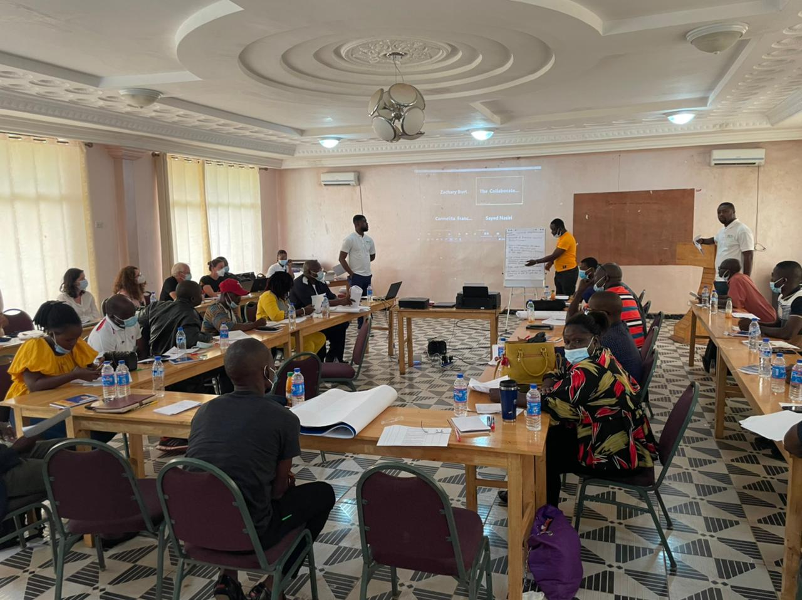
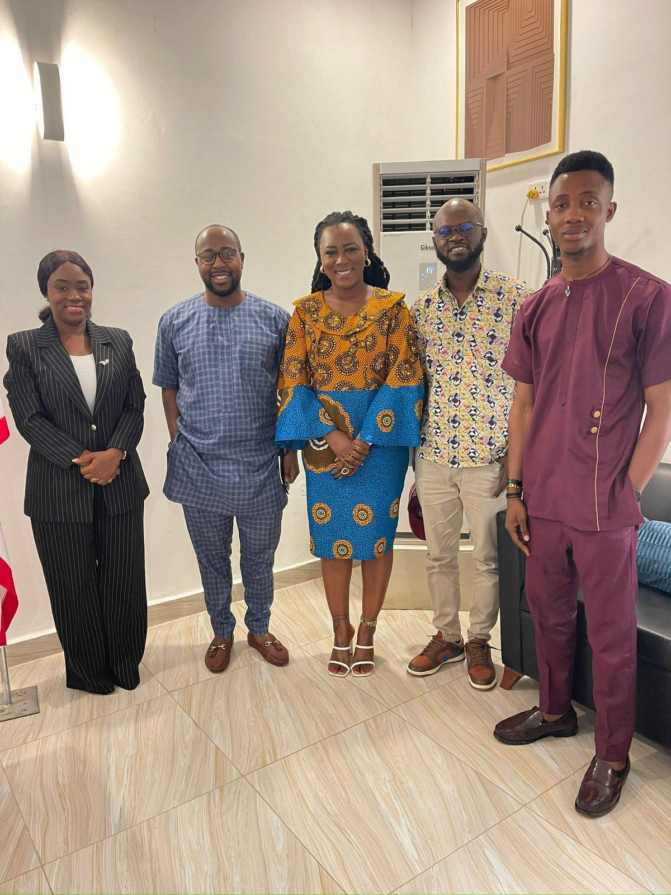
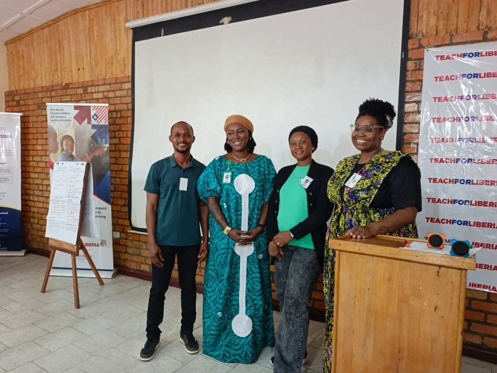

Our Mission
To generate evidence, strengthen capacity, and deliver locally driven research and development solutions using innovation and technology to advance sustainable societies.
Generating practical evidence and learning that guide integrated solutions for sustainable societies.
Strengthening the knowledge, systems, and leadership of local organizations and institutions.
Leveraging innovation and technology to address local priorities through research and development.
CIS begins with the priorities, knowledge, and leadership of the communities and institutions we serve. Research and evidence help us understand the challenge before solutions are designed.
We then work through practical partnerships that connect community needs with coordinated programs, stronger local systems, continuous learning, and outcomes that can be sustained over time.


Brought together nearly 200 participants to advance localization, partnership, and local capacity.
Work With CIS
Developed requirements for a World Bank-funded digital system supporting transparency and accountability.
Work With CIS
Strengthened staff capacity, community mediation, fundraising systems, and environmental education.
Work With CIS
Improved crime-data systems, digital services, and officer capacity in data collection and analytics.
Work With CIS
Supported leadership analysis and an actionable strategic plan for sustainable association growth.
Work With CIS
Advanced civic education, citizen engagement, leadership development, and stronger institutions.
Work With CISTo generate evidence, strengthen capacity, and deliver locally driven research and development solutions using innovation and technology to advance sustainable societies.
To be a leading development firm for innovation, research, evidence, and integrated solutions for sustainable societies across Africa and the world.
We equip local partners with the knowledge, systems, and tools needed to sustain progress and continue the work long after an initiative ends.
CIS turns evidence and local knowledge into practical solutions that strengthen communities and institutions.